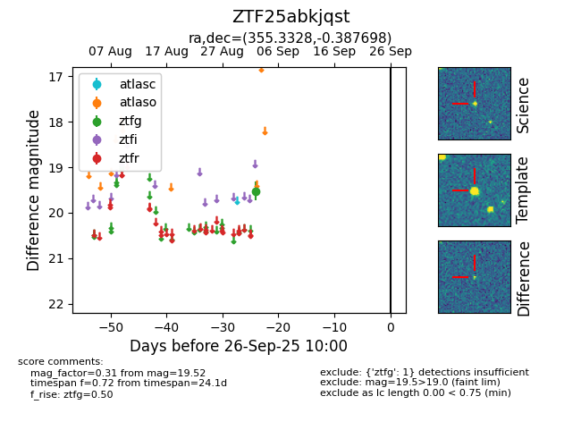

FINK: ZTF25abkjqst
Lasair: ZTF25abkjqst
ALeRCE: ZTF25abkjqst
ZTF25abkjqst (ztf,fink)
equatorial (ra, dec) = (355.3328,-0.38770)
galactic (l, b) = (87.8509,-58.40124)

last ztfg=19.52
1 ztfg detections